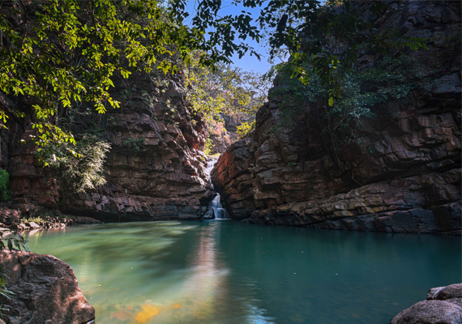

Ramdegi Falls
Ramdegi Waterfalls
RAMDEGI a small village located in the district of CHANDRAPUR which comes under the State of MAHARASHTRA. This village Population is approx 580 persons. The main village near Ramdegi is CHIMUR. It is one of the Picnic Spot in Chandrapur District. Here you can see many small birds and butterflies and different different sounds which you have never heard before.
.
About

The best part of this waterfall is you can see here the clear blue water with clear visibility of fish. This waterfall has 365 days water. You can visit anytime in the year. First there is a small temple below and then the waterfall. You can feel very pleasant because it is surrounded by jungle from every side. While Entering you have to note the Vehicle number and how many persons are travelling beacuse it comes under Government of Maharashtra (FOREST DEPARTMENT).
After waterfall you can also visit the Bhuddha Temple exactly above the Waterfall and there are steps to go above from the other side of the waterfall. From the Buddha temple you can see the jungle. This jungle is a Part of the TADOBA JUNGLE. This jungle is famous for the tiger’s and many wild animals.
While traveling to this place please make sure that you don’t make place dirty as well as avoid drinks and smoking so that no animals and nature gets spoiled. Don’t take speakers so that small birds don’t die due to noise pollution.